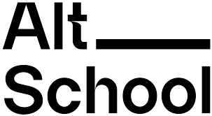

APPLICANT INFORMATION

ALT SCHOOL ID: ALT/SOE/024/0222
BIOGRAPHY:
My name is Ojo John Oluwasegun an Altschool student of Engineering with focus in front-end Engineering, a dedicated and hardworking individual with a passion for learning and helping others. I believe in the power of teamwork and collaboration, always striving to actively listen, learn from mentors, and contribute effectively to shared goals.
I have been following altschool africa for quite a long time thorough Twitter and with all my research i will humbly say Altschool Africa is commitment to providing a high-quality education that nurtures creativity, critical thinking, and problem-solving skills. With a scholarship from altschool I would have the opportunity to learn from experienced educators who are dedicated to empowering students to become leaders and change-makers. This access to quality education would equip me with the knowledge and skills necessary to succeed in a rapidly evolving world. One of the unique aspects of Altschool Africa is its emphasis on global perspectives and cultural exchange. Through this scholarship, I would have the chance to interact with students from diverse backgrounds and gain a broader understanding of different cultures and perspectives. This exposure would not only enrich my educational experience but also foster empathy, tolerance, and a global mindset that is crucial in today's interconnected world. Joining Alt School could be a great choice for various reasons because Alt School is known for its innovative approach to education, focusing on personalized learning experiences tailored to individual students' needs. If you value a more customized and flexible learning environment that allows you to explore your interests and strengths, Alt School could be a perfect fit for you.
MY OBJECTIVES:
My objective would be to benefit from a personalized and flexible learning approach tailored to my needs and intrests. it's all about creating a learning experience that suits my best and helps me thrive academically.
GOALS FOR SCHOOL OF ENGINEERING PROGRAMME:
My goals for the School of Engineering program include expanding my knowledge in engineering concepts, improving my problem-solving abilities, and applying these skills to assist users with technical queries effectively.
Back to Top
Next Page